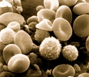
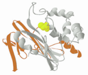
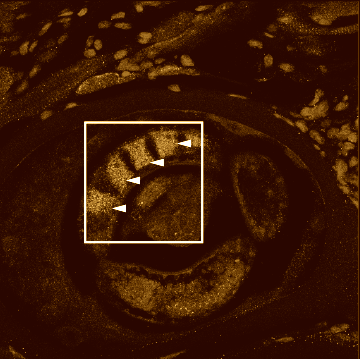

<!--
<div class="container">
  <div class="row">
  <h3>Victim Detection and 3D Pose Estimation from 2D Images for a Rescue Robot</h3>
  
  <p>
   2 phase Victim Detection and 3D pose estimation system implemented for a rescue robot.<br>
- In the first stage an Object Detection method used to detect the lying-down human bodies(victims).<br>
- In second stage a CNN algorithm is used to find body joints information then this joints are used to reconstruct a 3D model of human
    body and camera pose by applying matching pursuit algorithm in order to estimate the sparse representation of 3D pose and the relative
    camera from only 2D image evidence.<br> 

This Project is going to be submmited as: M. TaherAhmadi, S. Azami, S. Shiry, ”2 Stage Victim Detection and Pose Estimation from 2D Images 
    for a Rescue Robot” In Intelligent Robots and Systems, IROS. IEEE/RSJ International Conference. IEEE, 2017. <p>
</div>


  <div class="row">
  <h3>Community Detection in Social Networks</h3>
  
  <p>
    In this project we used Louvain Method implementation from pyhton NetworkX library for community detection in social networks.
    Modularity is a scale value between -1 and 1 that measures the density of edges inside communities to edges outside communities.
    Optimizing this value theoretically results in the best possible grouping of the nodes of a given network.
    This method is a greedy optimization method that appears to run in time O(n log n). <p>
</div>

</div>
-->---
layout: default
title: Research
weight: 2
---

<div class="container">

<h2>Plasmodium falciparum</h2>

  <div class="row">
  <h3>Non-opsonic phagocytosis</h3>
  
  <p>
    During malaria infection, phagocytosis plays a critical role in parasite clearance and recovery. Yet, little is known about which receptors on host antigen-presenting cells (APCs) are responsible for recognizing parasites and initiating uptake. The high variability displayed by parasite ligands expressed on the erythrocyte surface renders research into the molecular mechanism of phagocytosis highly challenging. Our specific aim is to characterize how APCs interact with and mediate uptake of parasitized red blood cells (pRBC) during malaria infection. Characterizing elements of antigen recognition and processing will help guide rational vaccine design for a disease currently lacking in prophylactic treatment options.  </p>

</div>


  <div class="row">
  <h3>Low Complexity Regions</h3>
  
  Low complexity regions (LCR) are amino acid motifs found in proteins of many organisms spanning humans to yeast. LCRs comprise tandem repeats of amino acid blocks as well as homo-repeats of hydrophilic amino acid stretches. Plasmodium falciparum in contains prominent LCRs in over 90% of its proteome. Of these regions, the most striking are the unusual poly-asparagine stretches. Although single amino acid repeats can be found in a myriad of other organisms, asparagine enrichment is characteristic to Plasmodium. The functional relevance of these regions is poorly understood. We are employing parasite and mouse transgenics in conjunction with sequencing and bioinformatic analysis to probe the function, origin and maintenance of these parasitic LCRs.
  </div>

  <div class="row">
  <h3>Parasite UBLs</h3>
  
  Eukaryotes require ubiquitin for their own survival. Although this pathway is, to date, poorly characterized in eukaryotic parasites, it is axiomatic that Plasmodium uses ubiquitin and other ubiquitin-like (UBL) modifiers to regulate its physiology. Therefore, members of these parasitic pathways present interesting candidates for biological manipulation. We are using a combination of functional proteomics, genetics and crystallography to study ubiquitin and UBL-pathway components. Characterization of these pathways will shed light on ubiquitin processing in non- mammalian organisms and potentially uncover important targets to prevent Plasmodium infection and replication in humans.
  </div>

<hr>
<h2>Trichinella spiralis</h2>
<div class="row">
<h3>Remodelling of host muscle tissue</h3>
  
  Trichinella spiralis, a parasitic nematode, selectively infects terminally differentiated skeletal muscle cells. This parasite does not destroy its host cell, but rather reprograms it to support its presence. Remarkably, through targeted protein secretions (ES), it is able to de-differentiate myotubes, initiating their re-entry into the cell cycle and subsequent re-arrest at the G2/M interface. Consequently, angiogenesis and collagen production are upregulated and host inflammatory responses are modulated. We aim to characterize these secretions to identify how individual parasite factors are capable of transforming terminally differentiated cells. Furthermore, we are interested in harnessing these parasite factors to not only better understand mammalian cell biology, but also to intentionally manipulate the fate of specific tissues.
</div>

</div>

